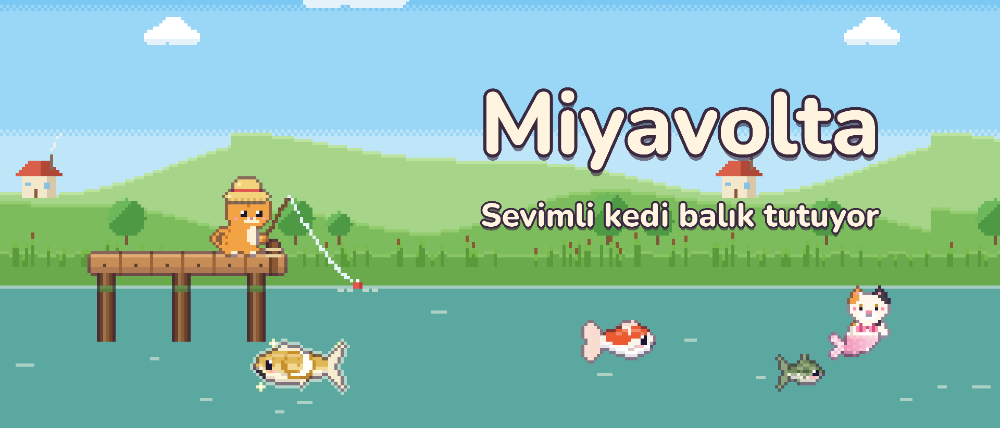
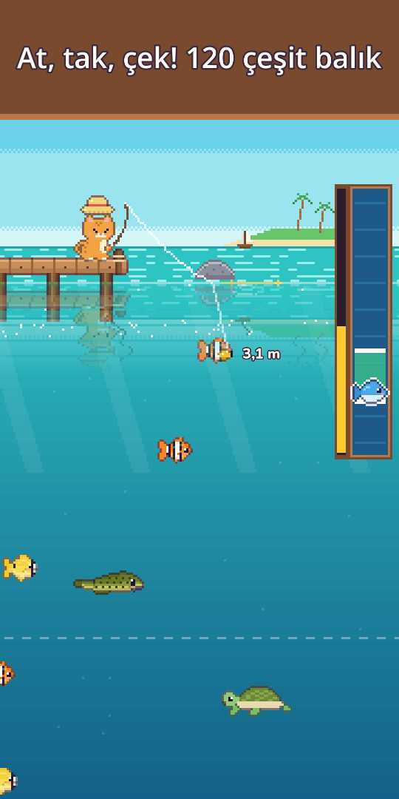
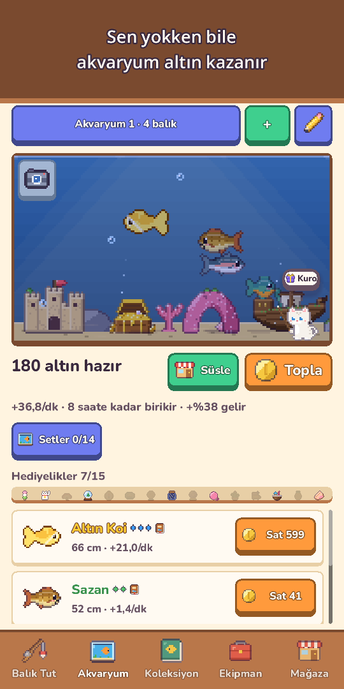
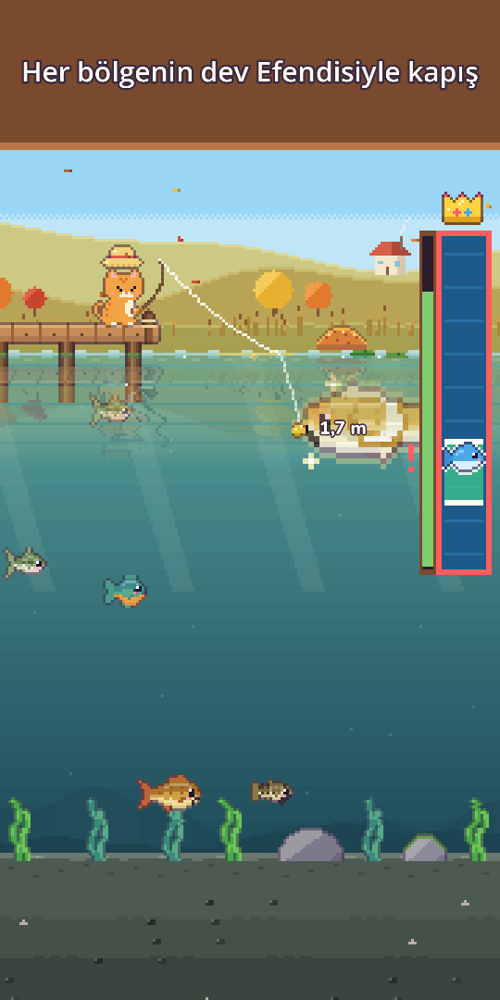
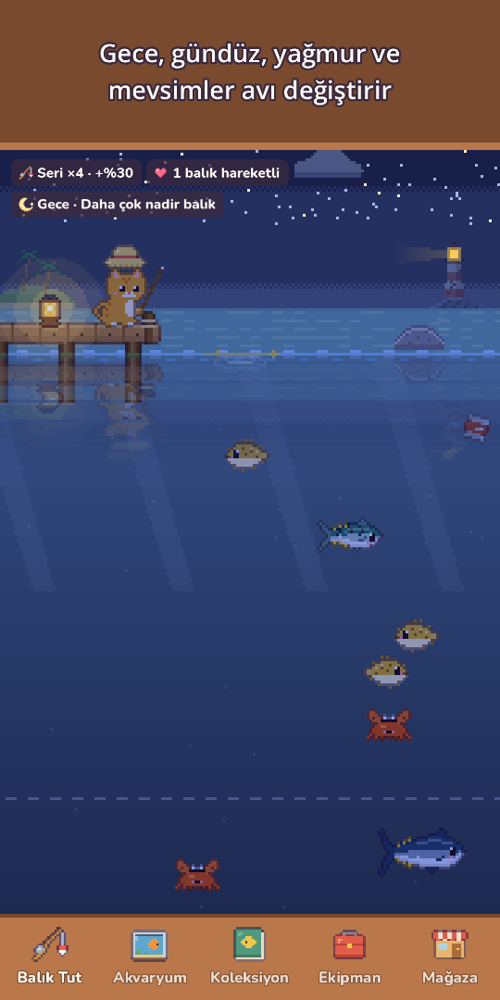
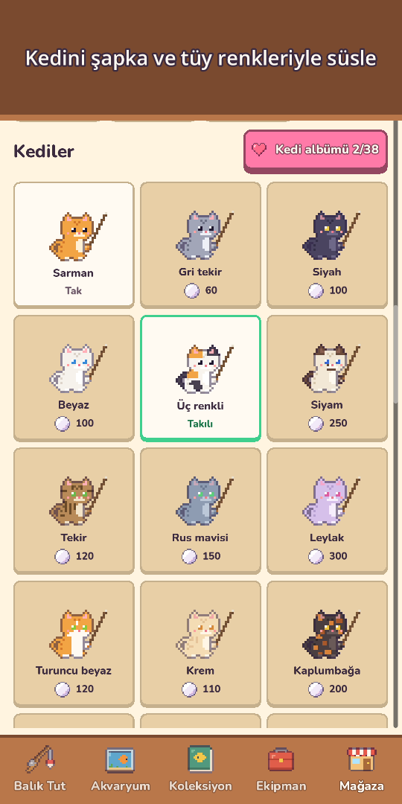
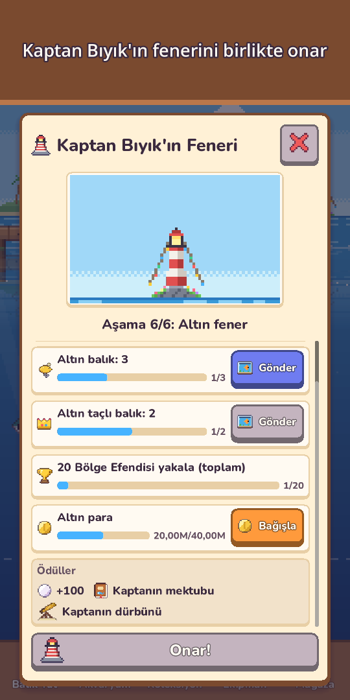
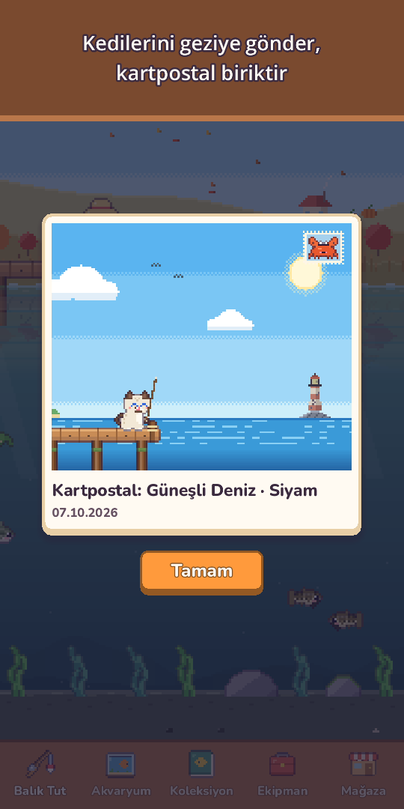

Miyavolta: Kedi Balıkçı
Sevimli kedi balık tutuyor
Oltanı ve dalış kıyafetini al! 120 tür balık tut, dalıp deniz canlılarını fotoğrafla ve nadir kedi denizkızlarıyla tanış.









Oltanı kap minik kedi, sular sürprizlerle dolu!
Miyavolta, tek parmakla oynanan huzurlu bir piksel sanat balık tutma oyunu. Oltanı at, suyun altında yüzen balıklara doğru yemi yönlendir ve keyifli yakalama çubuğuyla onları çek.
- Tek parmakla balık tutmaatmak için basılı tut, yemi kaydırarak yönlendir, çekmek için basılı tut. Mantar batınca dokun, tasmayla önde başla (isteğe bağlı); sudaki halkalar, sıçramalar, titreşim ve cüzdanına uçan altınlar da cabası
- 10 noktada 120 türÇayır Göleti, Dağ Deresi, Güneşli Deniz, Mercan Resifi, Donmuş Göl, Derinlikler, Batık Tapınak, Bulut Gölü, Volkan Adası ve Mangrov Ormanı
- Nadir altın balıkları, nadir balık sürülerini ve Ay Sazanı, Yıldız Balina gibi efsaneleri avla; her bölgenin dev Efendisiyle günde bir kez kapış
- Dalışdalış kıyafetini giy, her noktada yüzerek tutulamayan canlıları Fotoğraf Albümün için çek ve fenerinle gizli derin mağaraları bul
- Kedi denizkızlarıher noktada efsanelerden bile nadir bir kedi denizkızı yaşar. Onu akvaryumuna al ya da serbest bırakıp şans kutsaması kazan
- 5 seviyede 25 yemiyi yemler daha nadir balıkları çeker, özel yemler denizkızlarını ve efsaneleri çağırır, güçlü bir balık oltanın ipini bile koparabilir!
- Canlı bir gökyüzügece ve gündüz saatine göre değişir, yağmur, kar ve gökkuşağı avı etkiler, kayan yıldızlar inci verir, mevsimler ve gerçek ay evreleri manzarayı değiştirir. Her noktada 6 saatlik hava tahmini var, parıldayan altın dalgacıklar büyük balıkları gösterir
- Koleksiyonbirçok balığın sevdiği bir zaman var (gece, yağmur, şafak ya da mevsim), en büyük avların Altın taç kazanır ve her türün ilk yakalanışı o günün gökyüzünü hatırlar: saat, hava, mevsim ve nokta
- Akvaryumbalıkların sen oyunda değilken bile para kazanır. Batık Gemi, Mercan Kemer ve fazlasıyla süsle, Akvaryum Setleriyle gelirini artır, Akvaryum düzenlerini kısa bir kodla paylaş, bir balığa dokunup nerede yakalandığını ve kaç gündür birlikte olduğunuzu gör
- Kedi hayatı ve koleksiyonKurbağa Şapka'dan Taç'a şapkalar, tüy renkleri, mevsim şapkaları ve sıcacık bir Kedi köşesi. Ailendeki bir kediyi 3 saatlik Kedi gezisine gönder, piksel kartpostallar getirsin; döndüğünde Kedi günlüğünü oku
- Komşular ve şenliklerkomşu kediler akvaryumuna uğrar ve hediyelik bırakır, Arkadaşlık yeni sözler, küçük hediyeler ve bir dostluk şapkası getirir. Haftalık turnuva, Ayın ortak avı, Haftanın misafir balığı ve her yıl 5 şenlik (Kiraz Çiçeği, Yaz, Cadılar Bayramı, Noel, Yılbaşı): damgaları sonsuza dek sende kalacak özel süslerle takas et
- Yaşlı fener bekçisi kedi Kaptan Bıyık'ın şişedeki mektuplarını oku, fenerini onarmasına yardım et
- Kendi hızında gelişOlta, Makara, Misina, Yem ve Akvaryum geliştir, tuttuğun bir balıktan yem yapıp o türü hedefle (efsaneviler hariç); Günlük Görevler, Günlük Hediye (bir gün kaçırsan da ilerlemen sıfırlanmaz) ve birlikte geçen günler için hediyeler
- Keyifli ekstralarmanzara modu düğmeleri gizler, sadece manzarayı izlersin; Balıkçı günlüğündeki Fotoğraf albümü son 12 akvaryum ve Kedi köşesi fotoğrafını saklar; her gün manzaraya saklanan küçük dostu bul, inci kazan
- İnternetsiz oyna, istediğin zaman
Ücretsiz oyna; isteğe bağlı satın alımlar: İnci paketleri, Başlangıç Paketi ve Destekçi Paketi (reklam izlemeden ödüller, Taç şapka ve iki kat çevrimdışı kazanç sınırı). 120 türün hepsini hiç para harcamadan yakalayabilirsin.
Zorunlu reklam yok, banner yok. Reklamlar yalnızca senin seçtiğin isteğe bağlı ödüllerdir; örneğin bir balığı iki katına satmak için.
Rahatla, oltanı at ve bugün neyin vuracağını gör!